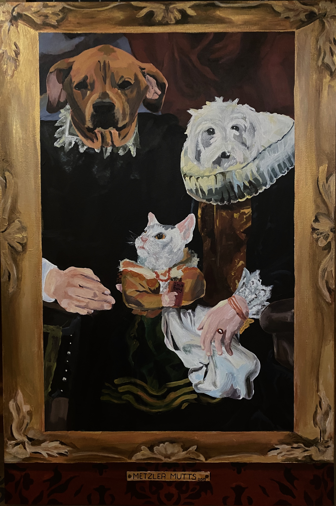

Originals

Metzler Mutts
(3x4ft) acrylic on canvas. This is a commissioned piece of the client's pets. It is a satirical piece where the animals are posing as a 17th century family. The frame and wallpaper are also painted.